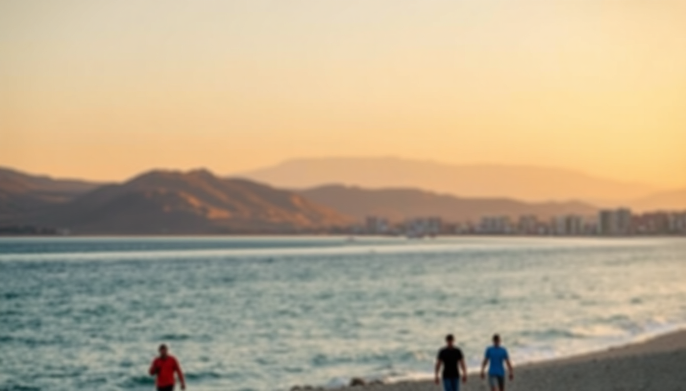

Best Beaches in Egypt: Red Sea & Mediterranean Guide 2025

I spent three weeks bouncing between the Red Sea coast and the Mediterranean last spring, testing beaches so you don’t have to guess. Egypt’s shoreline splits into two distinct experiences: the coral-packed Red Sea resorts of Hurghada, Sharm El Sheikh, and Marsa Alam, and the quieter, sandier Mediterranean stretches near Alexandria. Here’s what I actually found worth your time—and what to skip.
Which Red Sea beach is best for snorkeling and diving?
Sharm El Sheikh’s Ras Mohammed National Park is the crown jewel for underwater life. I booked a day trip from the marina, and within ten minutes of jumping in, I was swimming over table corals surrounded by parrotfish and a curious sea turtle. If you want shore-entry snorkeling without a boat, head to Naama Bay—it’s busy, but the coral garden starts right at the shoreline.
For divers, Hurghada’s Giftun Islands offer drift dives with visibility often exceeding 30 meters. I did a two-tank dive with a local operator out of the Marina Hurghada and saw a massive Napoleon wrasse on the second drop.
- Ras Mohammed National Park (Sharm El Sheikh) – boat-accessed only, best for advanced snorkelers
- Naama Bay (Sharm El Sheikh) – free entry, good for families
- Giftun Islands (Hurghada) – book a half-day boat trip
- Abu Dabbab (Marsa Alam) – seagrass beds where dugongs feed year-round
What’s the best beach in Hurghada that isn’t overcrowded?
Skip the main strip of Sakkala—it’s packed with resort loungers and jet ski noise. Instead, drive 25 minutes north to El Gouna. This lagoon-style town has a string of beaches like Mangroovy Beach and Zeytuna Beach where the water stays calm and the crowd thins out. I paid 150 EGP for a day pass at Mangroovy and had a shaded lounger with direct sand access.
If you prefer staying in Hurghada proper, Mahmya Beach on Giftun Island is a private stretch with white sand and a buffet lunch included in the boat transfer. It’s touristy, but the water clarity is legit.
- El Gouna – 25 min north of Hurghada, day passes available at most hotels
- Mahmya Beach – boat-only, book ahead in high season
- Sahl Hasheesh – quieter bay south of Hurghada, good for long swims
Is Marsa Alam worth the long drive from Hurghada?
Yes, if you want solitude and wild marine encounters. Marsa Alam is a three-hour drive south of Hurghada, and the beaches are mostly undeveloped. Abu Dabbab is the most famous spot—I waded in at 8 a.m. and had a dugong grazing ten meters away for twenty minutes. No crowds, just sand and seagrass.
The town itself has few services, so I stayed at Jaz Marsa Alam Resort which has its own house reef. Snorkeling off the jetty there was better than any boat trip I took in Hurghada.
- Abu Dabbab – free public access, best early morning
- Marsa Mubarak – sea turtles and rays, requires a guide
- Shaab Samadai – dolphin house reef, boat-only
What about Egypt’s Mediterranean beaches—are they worth visiting?
The Mediterranean coast is a different animal. Alexandria’s beaches like Montazah and Maamoura are urban and crowded—locals pack them on weekends, and the water is murky. I preferred Agiba Beach near Marsa Matruh, a two-hour drive west of Alexandria. It’s a limestone cove with turquoise water and no coral, but the sand is soft and the waves are gentle.
Cleopatra Beach in Marsa Matruh is the most famous, but I found it overrated—too many vendors and trash in the shallows. Skip it and drive 15 minutes to Al-Obayed Beach instead. It’s quieter, cleaner, and the water drops off fast for good swimming.
- Agiba Beach (Marsa Matruh) – best for swimming, no coral
- Al-Obayed Beach – less crowded alternative to Cleopatra
- Montazah Beach (Alexandria) – historical setting, avoid weekends
When is the best time to visit Egypt’s beaches?
October and April are the sweet spot. I visited Hurghada in late October—water was 27°C, air was 30°C, and the resorts were half-empty. July and August are punishing: 40°C heat, humidity on the Red Sea coast, and Mediterranean beaches packed with Egyptian families on holiday.
For diving, avoid December to February. The Red Sea water drops to 22°C and wind kicks up waves, especially in Sharm El Sheikh. I dove in January once and regretted it—visibility halved and I was shivering between dives.
- October–November: best for Red Sea (warm water, low crowds)
- April–May: best for Mediterranean (pleasant air, no summer rush)
- June–September: avoid Red Sea unless you love heat; Mediterranean is swimable but crowded
How do I get between these beach towns without a tour?
The most practical option is a private transfer or rental car—I used Budge Egypt for a one-way drive from Hurghada to Marsa Alam and it cost $60. Buses exist (Go Bus runs Hurghada–Sharm via ferry and Hurghada–Marsa Alam), but they’re slow and schedules are unreliable.
For Hurghada to Sharm El Sheikh, the ferry from Hurghada Marina takes 90 minutes and costs $50. I took it in November and it was smooth, but check wind conditions—they cancel often in winter.
- Private transfer: $50–80, book via hotel or local agency
- Go Bus: $10–15, book online or at station
- Ferry (Hurghada–Sharm): daily in summer, limited in winter
FAQ
Is it safe to swim at Red Sea beaches alone? Yes, at developed beaches like Naama Bay or resort beaches in El Gouna. Avoid swimming alone at remote spots like Abu Dabbab—currents can be strong, and there’s no lifeguard. I always swam within sight of other people.
Do I need a visa to visit these beaches as a tourist? Yes, most nationalities need a tourist visa. You can get a single-entry visa on arrival at Hurghada or Sharm El Sheikh airport for $25 cash. I used the e-visa system before my trip—it took three days and saved queuing.
Which beach is best for non-swimmers? Zeytuna Beach in El Gouna. The water stays waist-deep for about 50 meters out, and the sandy bottom has no rocks. I saw elderly visitors and toddlers wading without issues.
Conclusion
- Sharm El Sheikh wins for serious snorkeling and diving—Ras Mohammed is world-class
- Hurghada is the most convenient hub, but skip the main strip and head to El Gouna
- Marsa Alam is worth the drive for dugongs, sea turtles, and empty sands
- Mediterranean beaches are best in spring, and Agiba Beach beats Cleopatra every time
- Travel in October or April for the best weather and fewest crowds